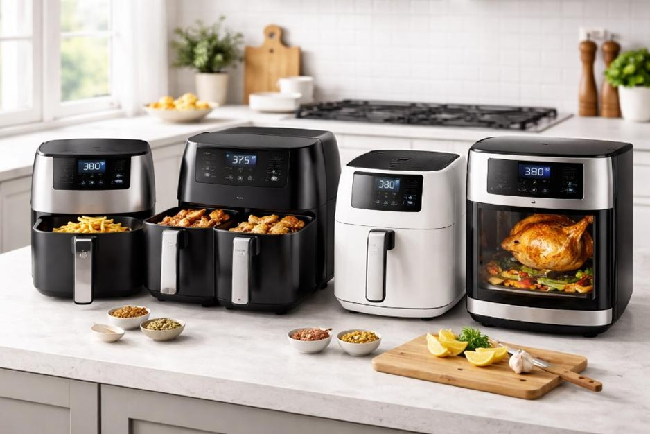
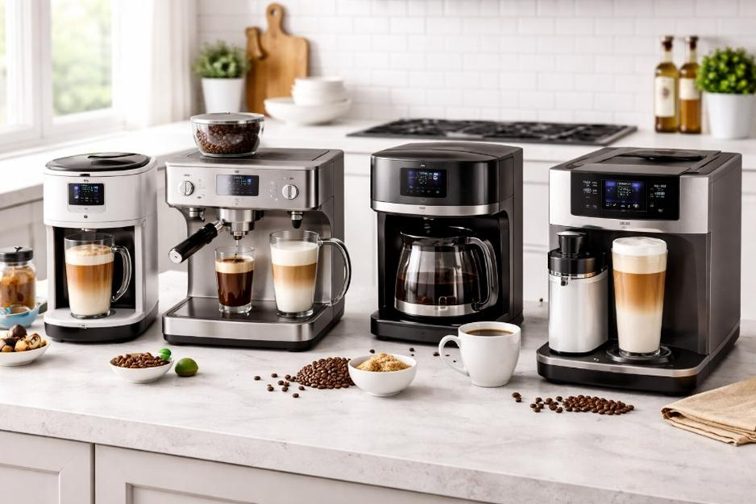
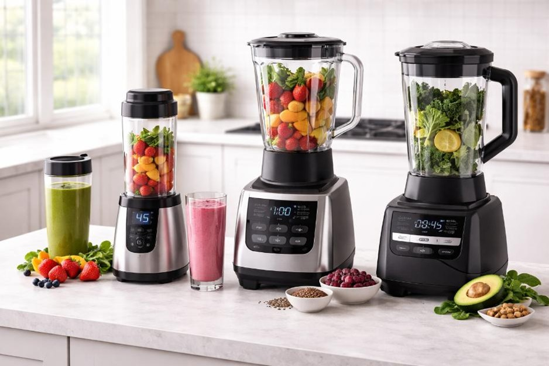

Kitchen guides
Each guide highlights the best overall, best value and premium pick to help you choose with confidence.

Best Air Fryers UK
Compare the top 3 air fryers for quick, efficient home cooking and everyday ease of use.
View guide →
Best Coffee Machines UK
Find the best coffee machines for home brewing, simple controls, great taste and value.
View guide →
Best Blenders UK
Discover the best blenders for smoothies, soups and everyday kitchen use.
View guide →